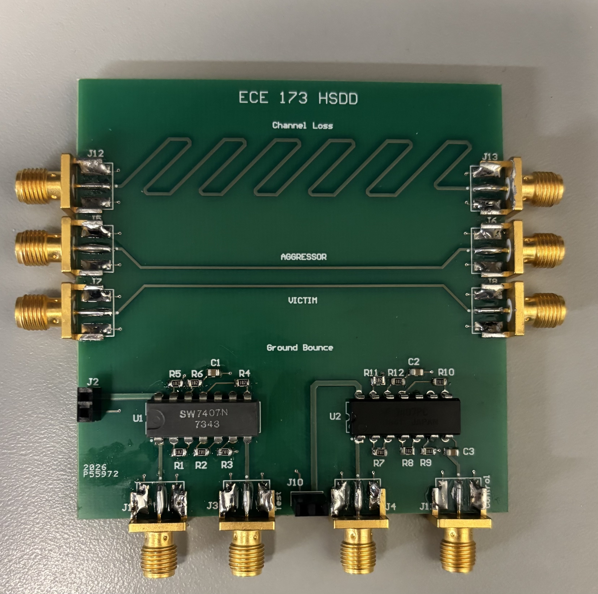
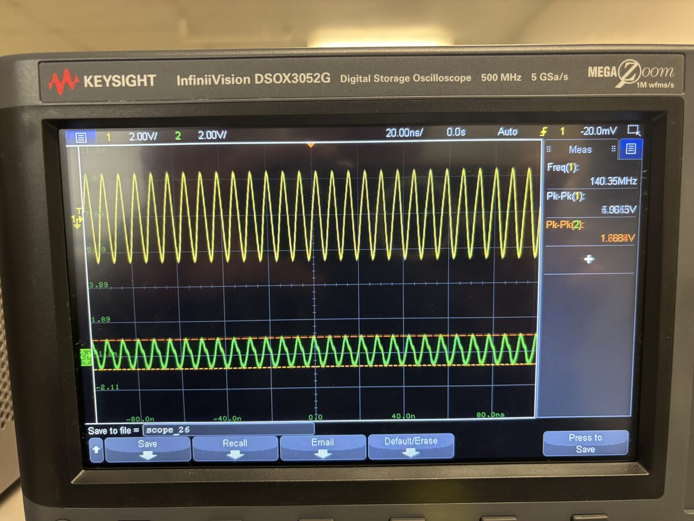
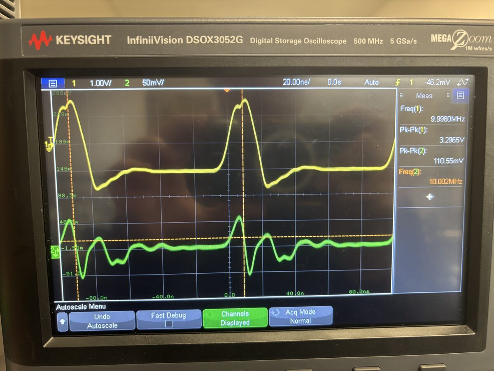
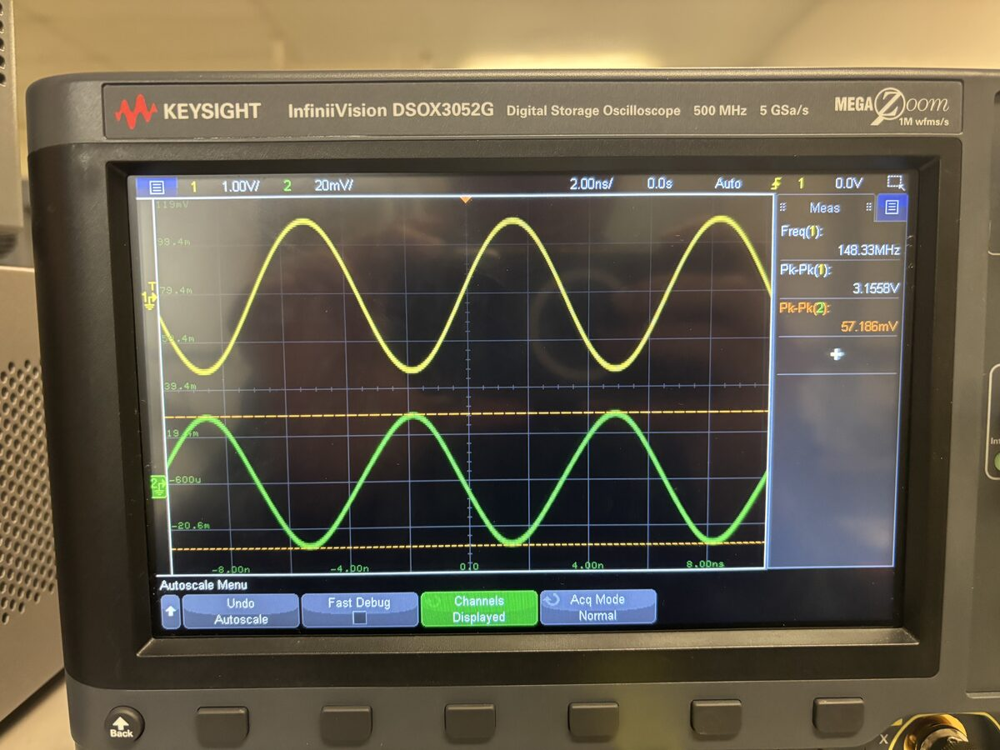
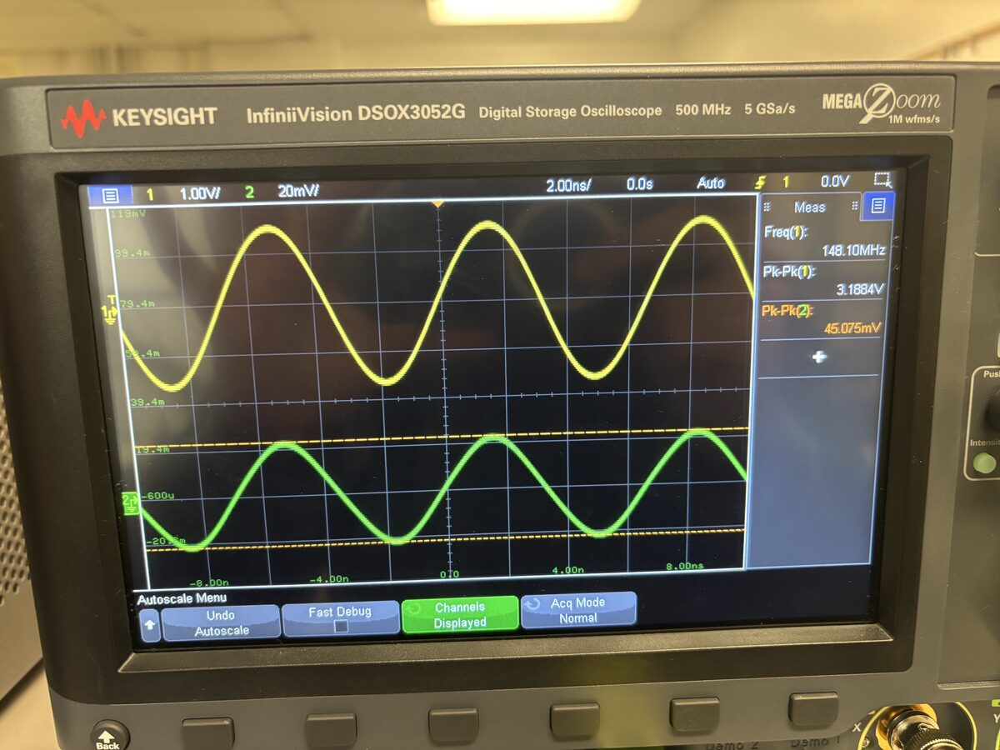

High-Speed Signal Integrity Test Board
A two-layer FR4 test board built to independently measure channel loss, ground bounce, and crosstalk at 20 Mbps — designed, assembled, and bench-tested end to end, including the bring-up debugging that got the data to make sense.

Overview
The goal was to build a board that could isolate and independently observe three transmission-line effects — channel (insertion) loss, ground bounce, and crosstalk — on real hardware instead of leaving them as textbook concepts. The team split the work into research, breadboard verification, DRC setup, schematic capture, layout, manufacturability review, assembly, and test, coordinated through a shared Altium 365 workspace with DRC rules set to the class's advanced PCB requirements.
My part: I led the research and schematic section for channel loss (while studying all three phenomena), set up the Altium 365 workspace and DRC rules, created the full board layout, assembled the populated board, and set up and ran the bench test — scope, waveform generator, RF generator, DC supply, and the BNC/SMA interconnects — for all three measurements.
Test setup & methodology
- Channel loss — insertion loss computed as 20·log₁₀(Vout/Vin), comparing the input (CH1) against the signal after the channel (CH2). Trace spacing was held to at least 3× the trace width so coupling from adjacent traces wouldn't contaminate the loss measurement itself.
- Crosstalk — the aggressor trace was always driven from its near-end SMA with the far end terminated in 50 Ω. Near-end crosstalk (NEXT) was read at the victim's near-end SMA (far end terminated); far-end crosstalk (FEXT) was read at the victim's far-end SMA (near end terminated). Coupling % = Vvictim / Vaggressor.
- Ground bounce — measured with and without a 4.7 µF decoupling capacitor at the IC's ground pin, at 1 MHz and 10 MHz.
Primary instrument was a Keysight InfiniiVision DSOX3052G (500 MHz / 5 GSa/s). A handful of early ground-bounce reference captures used a Keysight EDUX1052G (50 MHz / 1 GSa/s) instead — those are called out separately below since they're not directly comparable. Signal generation and power came from a Keysight EDU33212A waveform generator and EDU36311A DC supply, with 50 Ω terminators on unused ends throughout.
Results: channel loss
With the mislabeled crosstalk points removed from the dataset, the remaining data shows a smooth, physically sensible increase in loss with frequency:

Full channel loss data
| Sample | Frequency | Vin (Pk-Pk) | Vout (Pk-Pk) | Insertion loss |
|---|---|---|---|---|
| IMG_8273 | not captured | 261.3 mV | 253.8 mV | −0.25 dB |
| IMG_8275 | not captured | 3.41 V | 1.76 V | −5.74 dB |
| IMG_8279 | 127.11 MHz | 3.54 V | 1.93 V | −5.26 dB |
| IMG_8297 | 158.63 MHz | 1.39 V | 480 mV | −9.26 dB |
| IMG_8298 | 307.71 MHz | 2.58 V | 344 mV | −17.5 dB |
Why loss increases with frequency
Two mechanisms are doing the work here. Skin effect pushes current toward the outer surface of the trace as frequency rises, shrinking the effective conduction area — that raises trace resistance, and the added impedance shows up as attenuation. Separately, the FR4 dielectric itself absorbs energy: a fast-changing electric field asks the board's molecules to keep re-aligning, and at high frequency they can't keep up. That lag between field and response dissipates energy as heat instead of signal. Both effects worsen with frequency, which is exactly the trend above.
At the board's actual operating rate of 20 Mbps, the trace run showed almost no measurable attenuation — not enough length or frequency content to see the effect clearly. To actually characterize the channel, we drove it with a dedicated RF signal generator swept up into the 100–300+ MHz range instead, using that sweep as a stand-in for genuinely high-speed signal content. That's where the data above comes from.
Results: ground bounce
Ground bounce was measured as noise coupled onto the ground reference during signal switching, with and without a 4.7 µF decoupling capacitor at the IC's ground pin:
| Config | Signal Pk-Pk | Bounce Pk-Pk | Bounce % of signal |
|---|---|---|---|
| 1 MHz — with capacitor | 3.9 V | 76 mV | 1.95% |
| 10 MHz — with capacitor | 3.38 V | 80.40 mV | 2.38% |
| 1 MHz — without capacitor | 3.8 V | 111 mV | 2.92% |
| 10 MHz — without capacitor | 3.30 V | 110.55 mV | 3.35% |

Earlier reference captures (different scope, not directly comparable)
| Sample | Config | Signal Pk-Pk | Bounce Pk-Pk | Bounce % |
|---|---|---|---|---|
| IMG_8306 | EDUX1052G, single edge | 9.6 V | 1.0 V | ~10.4% |
| IMG_8307 | DSOX3052G, ringdown (detail view) | — | 79.7 mV | — |
The first bounce measurements didn't make sense — the SMA meant to read the ground pin was showing what looked like the inverted input signal plus ringing on every edge. The cause: the SMA's inner conductor, which was supposed to reference the ground pin, was never actually tied to the board's common ground plane, so the scope was reading coupled inverted input, not real ground bounce. The fix was to bond the SMA's inner and outer shell together — the outer shell was already tied to the common ground plane — and probe the actual IC ground pin with a lead clipped to that bonded SMA.
Results: crosstalk (NEXT / FEXT)
Near-end crosstalk (NEXT) exceeded far-end crosstalk (FEXT) at every matched frequency:
| Frequency (approx.) | NEXT coupling | FEXT coupling |
|---|---|---|
| ~1 MHz | 0.85% | 0.62% |
| ~10 MHz | 0.83% | 0.62% |
| ~148 MHz | 1.81% | 1.41% |
| ~348 MHz | 3.00% | 2.38% |


Full NEXT data
| Sample | Frequency | Aggressor Pk-Pk | Victim Pk-Pk | Coupling % |
|---|---|---|---|---|
| IMG_8310 | 999.6 kHz | 8.0 V | 68 mV | 0.85% |
| IMG_8311 | 10.04 MHz | 8.2 V | 68 mV | 0.83% |
| IMG_8301 | 148.33 MHz | 3.16 V | 57.2 mV | 1.81% |
| IMG_8299 | 150 MHz (repeat) | 3.30 V | 58 mV | 1.76% |
| IMG_8300 | 348.18 MHz | 2.27 V | 68.0 mV | 3.00% |
Full FEXT data
| Sample | Frequency | Aggressor Pk-Pk | Victim Pk-Pk | Coupling % |
|---|---|---|---|---|
| IMG_8312 | 1.0000 MHz | 8.2 V | 51 mV | 0.62% |
| IMG_8313 | 10.00 MHz | 8.4 V | 52 mV | 0.62% |
| IMG_8302 | 148.10 MHz | 3.19 V | 45.1 mV | 1.41% |
| IMG_8303 | 348.96 MHz | 2.31 V | 54.9 mV | 2.38% |
Challenges & what I'd change
- Channel loss showed almost nothing at the board's real 20 Mbps rate — diagnosed as a mismatch between our trace length and the signal's frequency content, resolved by driving the channel with a swept RF source instead so the loss mechanism was actually visible on the scope.
- The ground bounce SMA was floating relative to the common ground plane, so early captures showed coupled inverted input rather than real bounce — traced to the SMA's inner conductor never being tied down, fixed by bonding inner and outer shell together.
- A batch of channel-loss captures ended up mislabeled as crosstalk data and had to be identified and excluded during analysis. Next time: log the test configuration (which phenomenon, which frequency, cap in/out) directly in the filename or a shared sheet at capture time, not after the fact.
Conclusions & next steps
Channel loss increases with frequency in the direction skin effect and FR4 dielectric loss predict, but I haven't yet run the actual theoretical transmission-line calculation for this board's specific trace length, spacing, dielectric constant, and copper weight to check the measured curve against a predicted one — that's the clearest next step. Ground bounce dropped by roughly 30% with the 4.7 µF decoupling cap at both test frequencies, in line with what decoupling is supposed to do. NEXT beat FEXT at every frequency I measured, which is consistent with near-end coupling typically dominating over far-end for this kind of trace geometry — though, same as the channel loss theory, I'd want to run the actual coupling-coefficient calculation before calling that confirmed rather than just consistent.
Beyond the specific numbers, this project is where a lot of high-speed design phenomena stopped being textbook concepts for me — and where I learned, the hard way, how much a mislabeled file or an unrecorded test configuration costs you later. Every board since has started with a capture log.
Downloads
- Full measurement report (PDF) DOWNLOAD ↓ · 12.8 MB
- Schematic (PDF) DOWNLOAD ↓
- 3D Model DOWNLOAD ↓